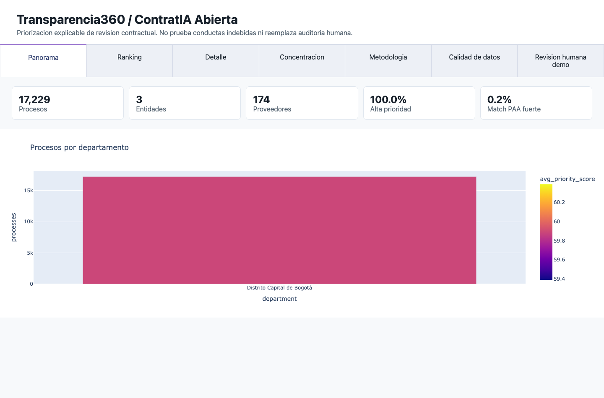
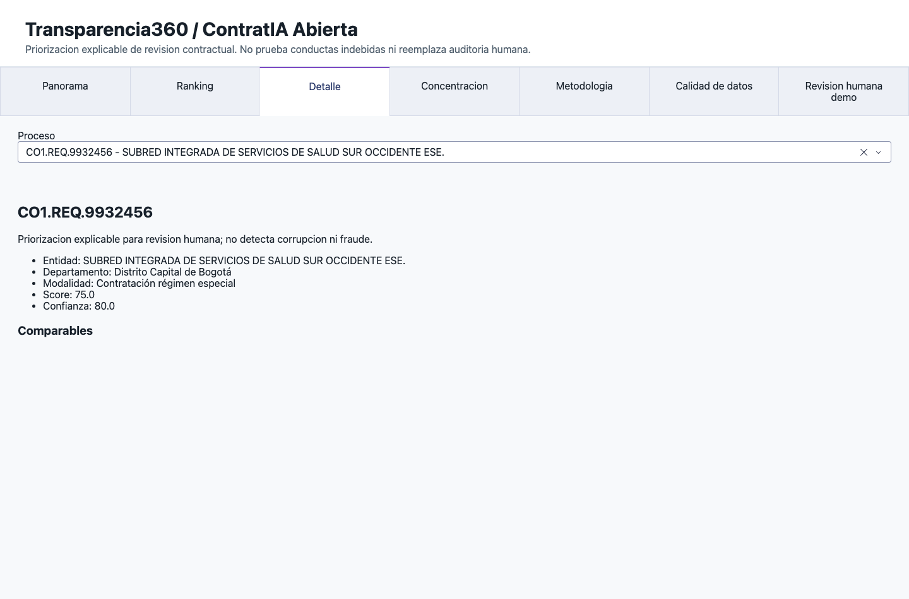

Proyecto final · Ingeniería de Datos
Transparencia360
ContratIA Abierta
Ordenar miles de procesos SECOP para decidir qué revisar primero.
Revisión humana
Datos abiertos
Trazabilidad
Universidad del Rosario · 2026

Arquitectura
Separación clara entre ETL, persistencia, servicios y dashboard.
Socrata → ETL → PostgreSQL + MongoDB → FastAPI → Dash
Demo
Panorama, ranking, detalle y comparables.

1Panorama

2Ranking

3Detalle y comparables